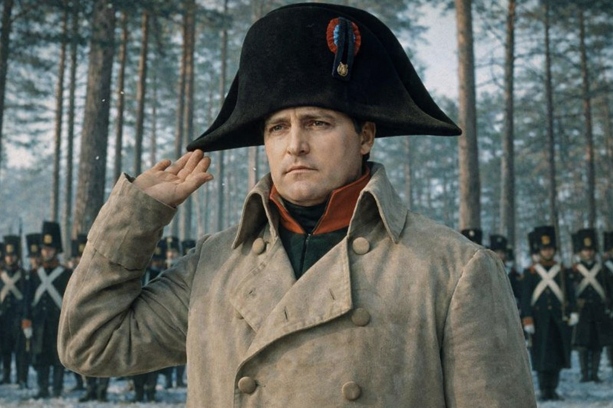

67 bejegyzés
9 millió követő
1 követés
Felhasználónév: Bonaparte Napoleon
Szlogen: "There's nothing we can do!!!"
Foglalkozás: Hadvezér, dicső császár
Hobbik: Győzni, szolgálni és irányítani hazámat
Bemutatkozás:
Oroszországi hadjárat (1812). A Grande Armée szinte teljesen megsemmisült:
az 500 000 fős hadseregből körülbelül 20 000 tért vissza.
